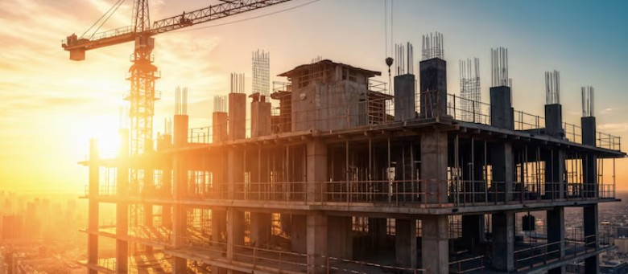

Proyek Kami

Pengembangan Kawasan Terpadu 'Green Living'
Pembangunan kompleks hunian dan komersial ramah lingkungan dengan fasilitas modern, hemat energi, dan sistem energi terbarukan.
Kemajuan:
75%
Jalan Tol Trans-Nusantara Seksi III
Konstruksi jalur jalan tol sepanjang 50 KM, bagian dari upaya pemerintah untuk meningkatkan konektivitas antar wilayah.
Kemajuan:
45%
Pembangkit Listrik Tenaga Surya 'Surya Raya'
Pembangunan fasilitas pembangkit listrik tenaga surya berskala besar untuk mendukung pasokan energi bersih di wilayah terpencil.
Kemajuan:
90%